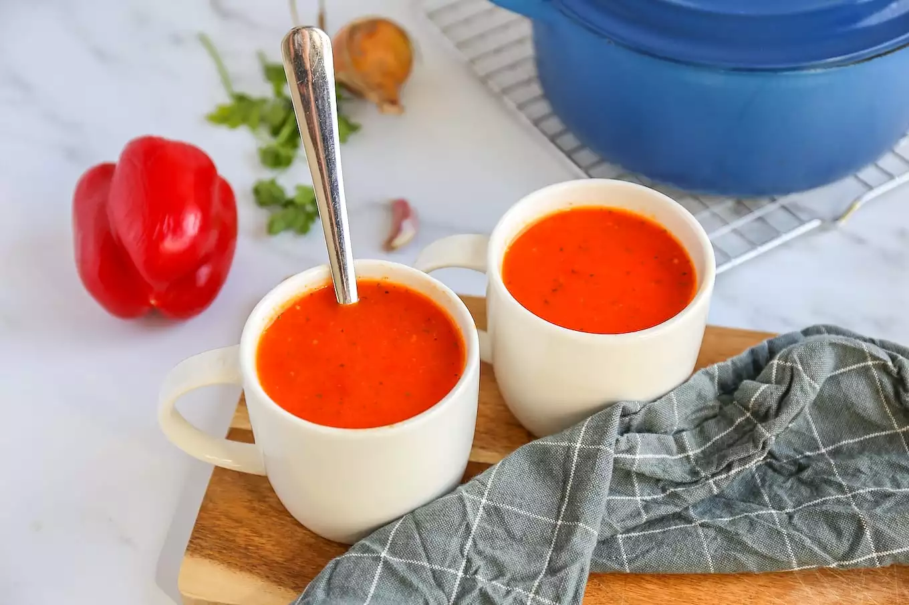

Voorgerecht
Hoofdgerecht
Nagerecht
Paprika Soep
Je hebt maar een paar ingrediënten nodig en dan staat er in 20 minuten een heerlijk soepje op tafel.
Ingrediënten
3 paprika’s
500 ml water
1 bouillonblokje (groenten)
1 teen knoflook
1 ui
1 tl oregano
1 tl basilicum
snufje zout en peper
Bereidingswijze
Snijd de paprika’s, ui en knoflook in stukjes.
Giet een scheutje olie in een soeppan en bak de ui en knoflook.
Voeg na een paar minuten de paprika toe en bak nog 2-3 minuten mee.
Daarna kunnen de rest van de ingrediënten erbij.
Breng de soep aan de kook en laat ongeveer 15 minuten koken. Pureer de soep met een staafmixer.

Tip
Lekker met bijvoorbeeld een caprese salade en een stokbroodje.